| 知乎专栏 |
数据可视化是借助于图形化手段，对数字罗列的数字进行分析，使分析结果可视化，清晰有效地展现数据背后意义、直观地传达出信息内容、从而实现视觉对话，这是表格或电子表格无法做到的。
常用的图表包括：线形图、柱状图、条形图、面积图、饼图、点图、仪表盘、走势图外，还有和弦图、圈饼图、雷达图、金字塔、漏斗图、K线图、关系图、网络图、玫瑰图、帕累托图、数学公式图、预测曲线图、正态分布图、迷你图、行政地图、GIS地图等各种展现形式。
数据可视化需要四个步骤：
折线图的用途主要用于展示数据随着时间变化的趋势。
import pandas as pd
import numpy as np
import matplotlib.pyplot as plt
df = pd.DataFrame(np.random.randn(15, 4), index=pd.date_range(
'2021/01/01', periods=15), columns=list('ABCD'))
df.plot()
plt.show()
| 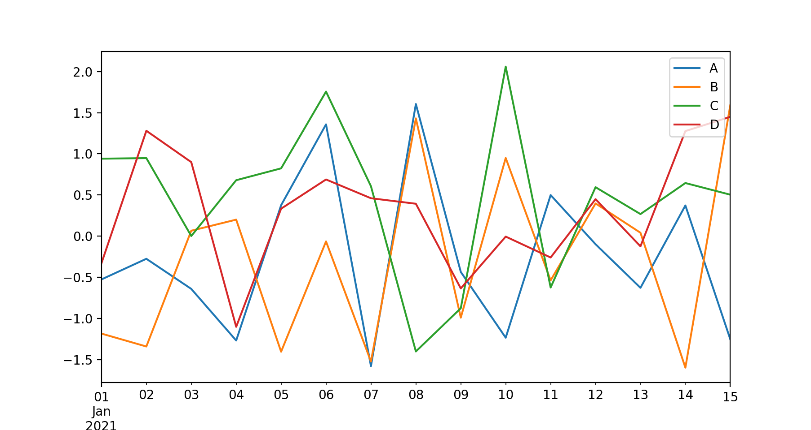 |
条形图主要用于表示离散型数据资料，即计数数据
import pandas as pd import numpy as np import matplotlib.pyplot as plt df = pd.DataFrame(np.random.rand(10, 4), columns=['A', 'B', 'C', 'D']) df.plot.bar() plt.show()
| 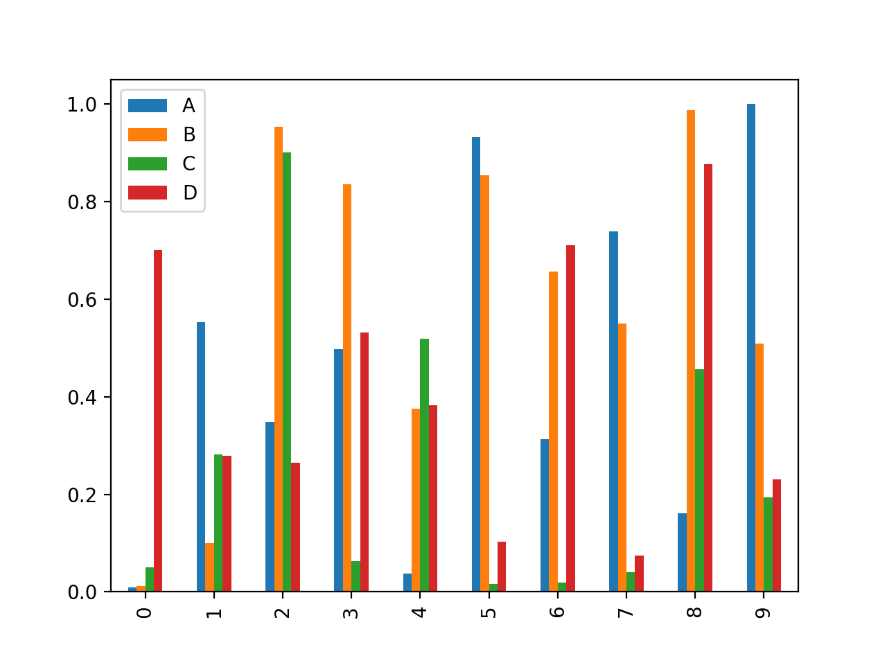 |
import pandas as pd import numpy as np import matplotlib.pyplot as plt df = pd.DataFrame(np.random.rand(10, 4), columns=['A', 'B', 'C', 'D']) df.plot.bar(stacked=True) plt.show()
| 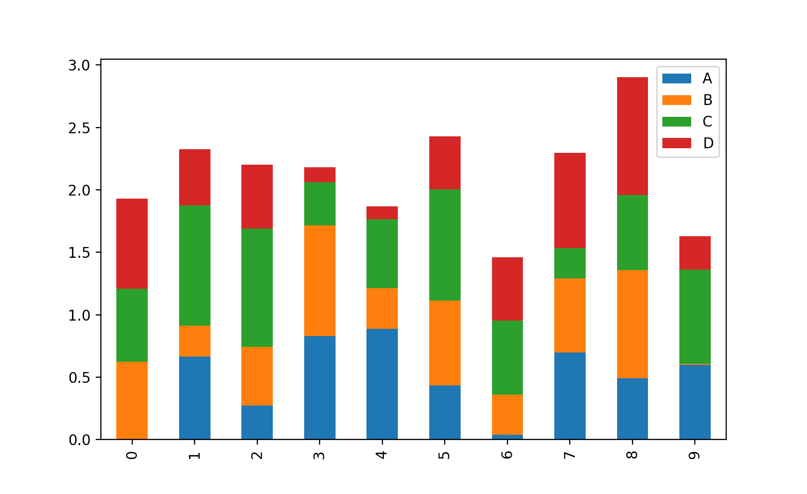 |
import pandas as pd import numpy as np import matplotlib.pyplot as plt df = pd.DataFrame(np.random.rand(10, 4), columns=['A', 'B', 'C', 'D']) df.plot.barh(stacked=True) plt.show()
| 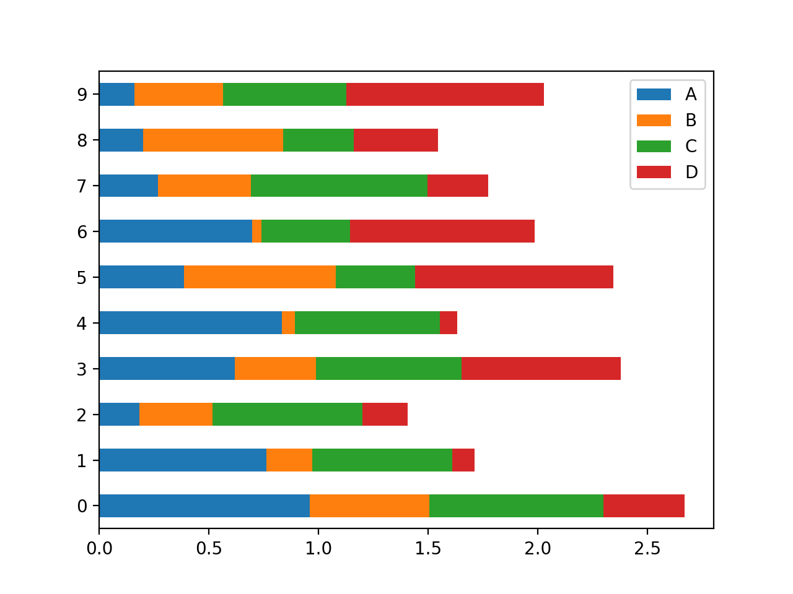 |
直方图(Histogram)，又称质量分布图，是一种统计报告图，由一系列高度不等的纵向条纹或线段表示数据分布的情况。 一般用横轴表示数据类型，纵轴表示分布情况。
import pandas as pd
import numpy as np
import matplotlib.pyplot as plt
df = pd.DataFrame({'A': np.random.randn(1000)-1,
'B': np.random.randn(1000),
'C': np.random.randn(1000)+1},
columns=['A', 'B', 'C'])
df.plot.hist(bins=20)
plt.show()
| 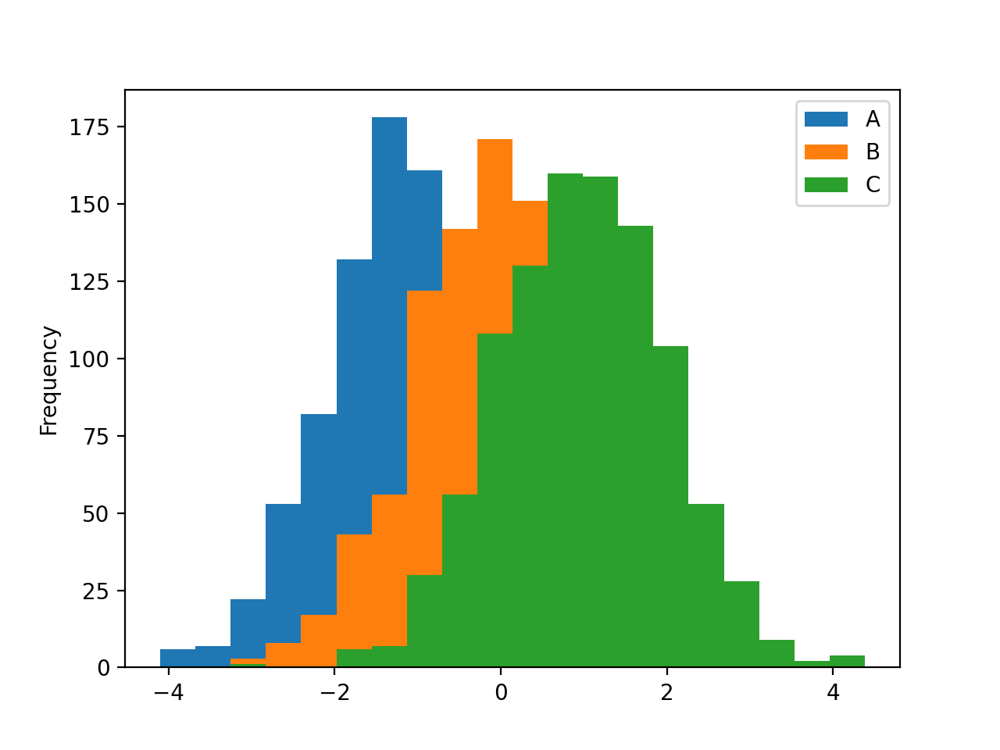 |
import pandas as pd
import numpy as np
import matplotlib.pyplot as plt
data = np.random.randn(1000)
df = pd.DataFrame({'A': data, 'B': data, 'C': data}, columns=['A', 'B', 'C'])
df.hist(bins=20)
plt.show()
| 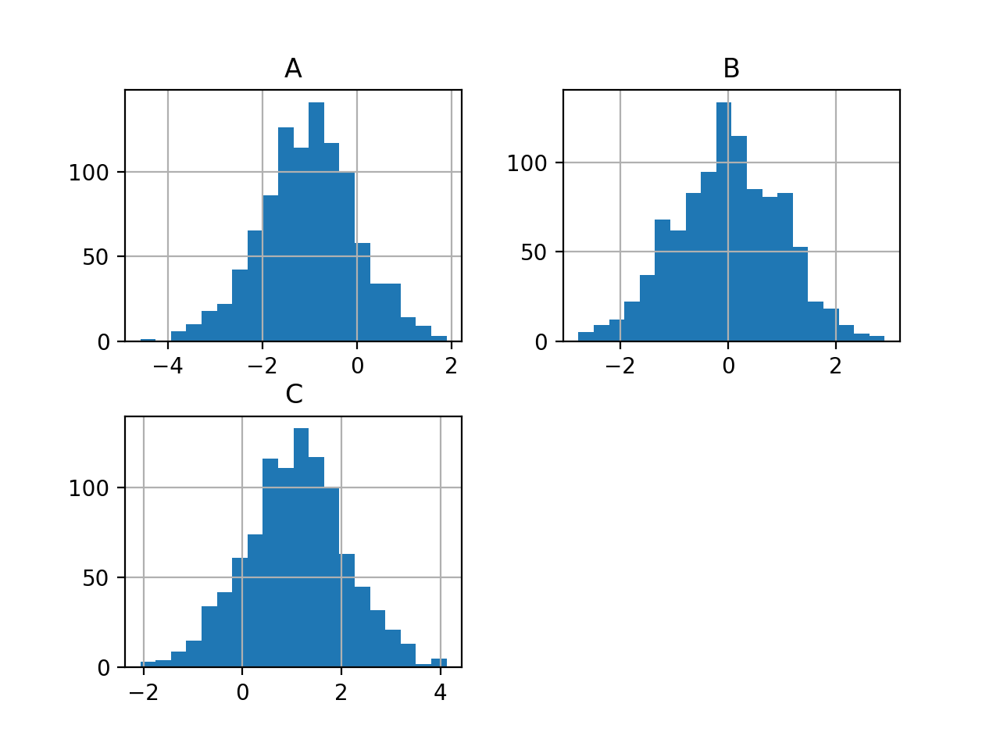 |
面积图又称区域图，面积图强调数量随时间而变化的程度，也可用于引起人们对总值趋势的注意
import pandas as pd import numpy as np import matplotlib.pyplot as plt df = pd.DataFrame(np.random.rand(10, 4), columns=['A', 'B', 'C', 'D']) df.plot.area() plt.show()
| 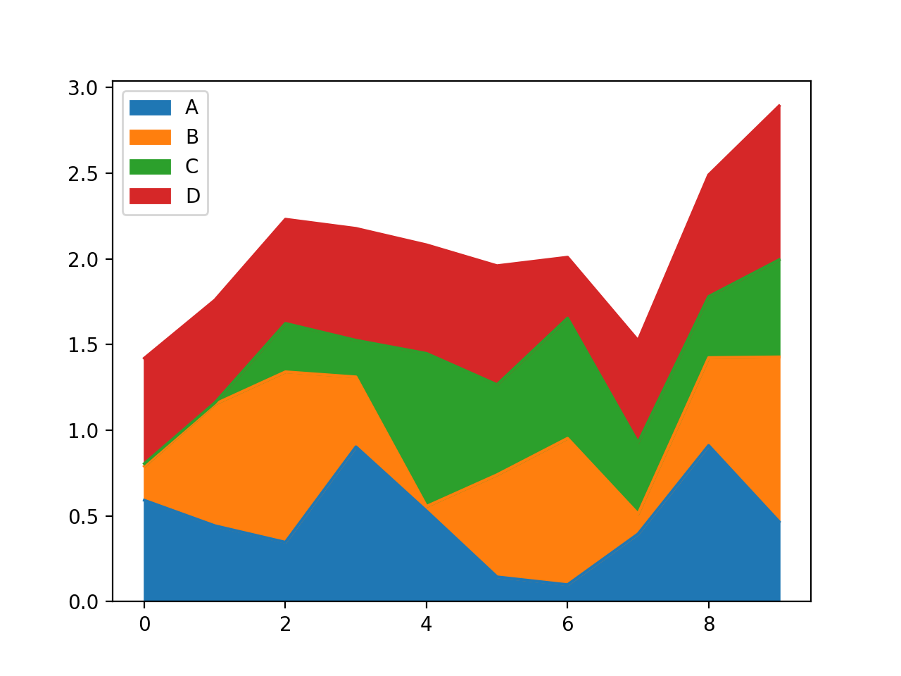 |
饼形图主要用于展示数据总额的百分比。缺点是，当多个数据值都小于饼图的 5% 时，区分各个扇区将十分困难。
import pandas as pd
import numpy as np
import matplotlib.pyplot as plt
df = pd.DataFrame(np.random.rand(5),
index=['A', 'B', 'C', 'D', 'E'], columns=['Pie'])
df.plot.pie(subplots=True)
plt.show()
| 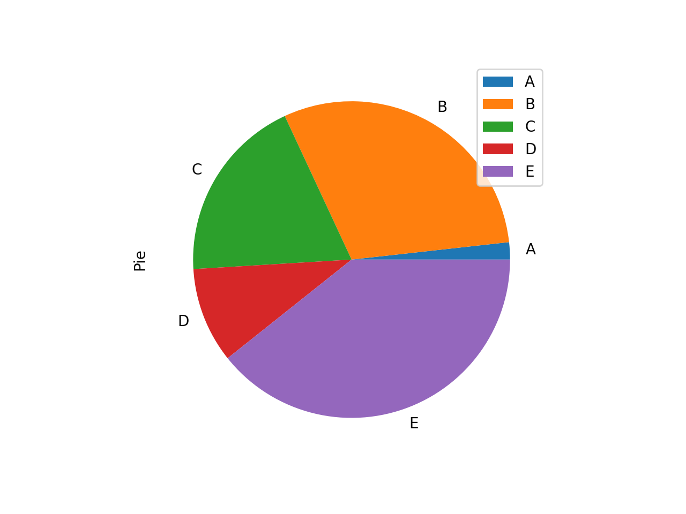 |
散点图是指在回归分析中，数据点在直角坐标系平面上的分布图，散点图表示因变量随自变量而变化的大致趋势，据此可以选择合适的函数对数据点进行拟合。
用两组数据构成多个坐标点，考察坐标点的分布，判断两变量之间是否存在某种关联或总结坐标点的分布模式。散点图将序列显示为一组点。值由点在图表中的位置表示。类别由图表中的不同标记表示。散点图通常用于比较跨类别的聚合数据。
import pandas as pd import numpy as np import matplotlib.pyplot as plt df = pd.DataFrame(np.random.rand(50, 4), columns=['A', 'B', 'C', 'D']) df.plot.scatter(x='A', y='B') plt.show()
| 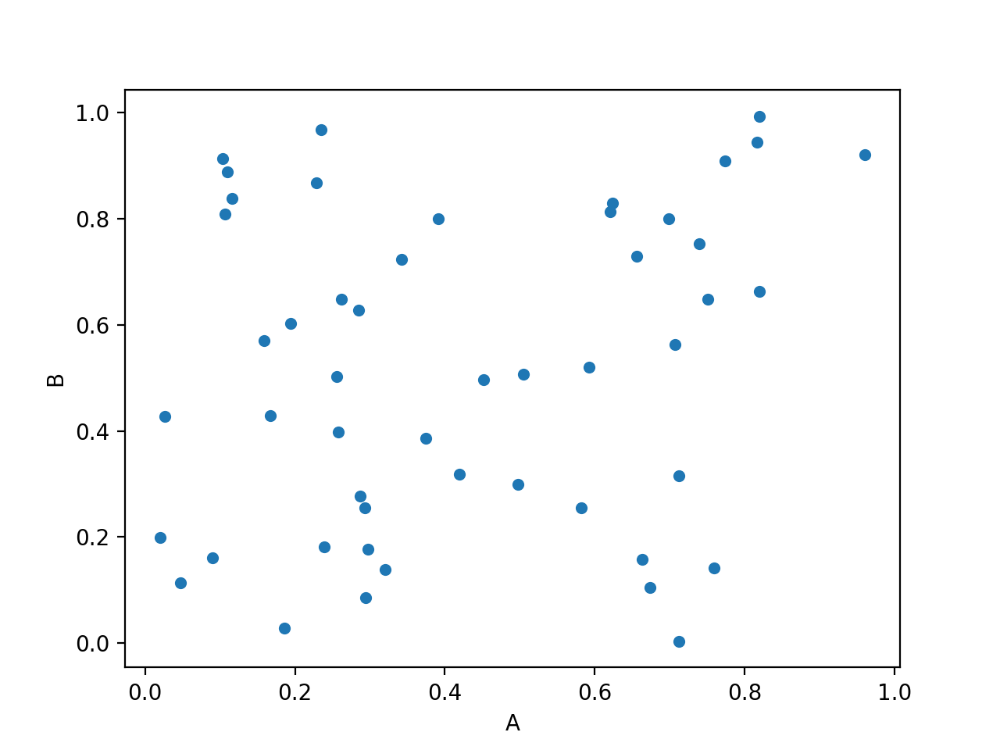 |
箱形图（英文：Box plot），又称为盒须图、盒式图、盒状图或箱线图，是一种用作显示一组数据分散情况资料的统计图。因型状如箱子而得名。在各种领域也经常被使用，常见于品质管理。不过作法相对较繁琐。
箱形图于1977年由美国著名统计学家约翰·图基（John Tukey）发明。它能显示出一组数据的最大值、最小值、中位数、及上下四分位数。
import pandas as pd import numpy as np import matplotlib.pyplot as plt df = pd.DataFrame(np.random.rand(10, 5), columns=['A', 'B', 'C', 'D', 'E']) df.plot.box() plt.show()
| 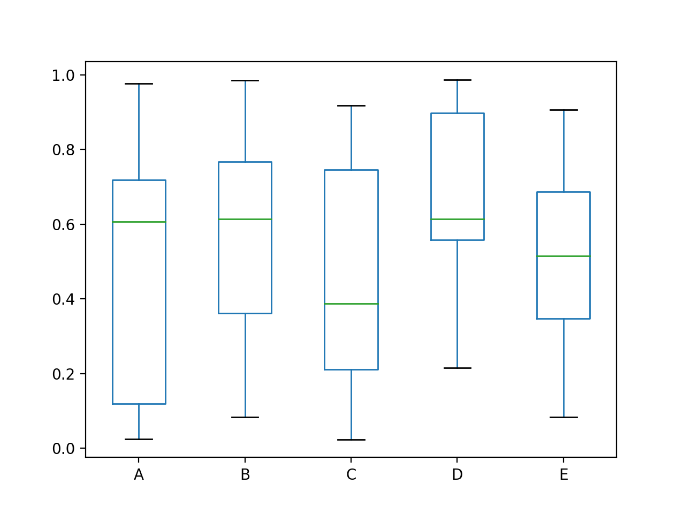 |
from matplotlib import font_manager
a = sorted([f.name for f in font_manager.fontManager.ttflist])
for i in a:
print(i)
.Aqua Kana .Arabic UI Display .Arabic UI Text .Keyboard .New York .New York .SF Compact .SF Compact .SF Compact Rounded .SF NS Mono .SF NS Mono .SF NS Rounded Academy Engraved LET Adobe Arabic Adobe Arabic Adobe Arabic Adobe Arabic Adobe Caslon Pro Adobe Caslon Pro Adobe Caslon Pro Adobe Caslon Pro Adobe Caslon Pro Adobe Caslon Pro Adobe Devanagari Adobe Devanagari Adobe Devanagari Adobe Devanagari Adobe Fan Heiti Std Adobe Fangsong Std Adobe Garamond Pro Adobe Garamond Pro Adobe Garamond Pro Adobe Garamond Pro Adobe Gothic Std Adobe Hebrew Adobe Hebrew Adobe Hebrew Adobe Hebrew Adobe Heiti Std Adobe Kaiti Std Adobe Ming Std Adobe Myungjo Std Adobe Naskh Adobe Song Std Al Bayan Al Nile Al Tarikh American Typewriter Andale Mono Apple Braille Apple Braille Apple Braille Apple Braille Apple Braille Apple Chancery Apple SD Gothic Neo Apple Symbols AppleGothic AppleMyungjo Arial Arial Arial Arial Arial Black Arial Hebrew Arial Narrow Arial Narrow Arial Narrow Arial Narrow Arial Rounded MT Bold Arial Unicode MS Arial Unicode MS Athelas Avenir Avenir Next Avenir Next Condensed Ayuthaya Baghdad Bangla MN Bangla Sangam MN Baskerville Beirut Big Caslon Birch Std Blackoak Std Bodoni 72 Bodoni 72 Oldstyle Bodoni 72 Smallcaps Bodoni Ornaments Bradley Hand Brush Script MT Brush Script Std Chalkboard Chalkboard SE Chalkduster Chaparral Pro Chaparral Pro Chaparral Pro Chaparral Pro Chaparral Pro Charlemagne Std Charter Cochin Comic Sans MS Comic Sans MS Cooper Std Cooper Std Copperplate Corsiva Hebrew Courier New Courier New Courier New Courier New DIN Alternate DIN Condensed Damascus DecoType Naskh DejaVu Sans DejaVu Sans DejaVu Sans DejaVu Sans DejaVu Sans Display DejaVu Sans Mono DejaVu Sans Mono DejaVu Sans Mono DejaVu Sans Mono DejaVu Serif DejaVu Serif DejaVu Serif DejaVu Serif DejaVu Serif Display Devanagari MT Devanagari Sangam MN Didot Diwan Kufi Diwan Thuluth Euphemia UCAS Farah Farisi Futura Galvji Geeza Pro Georgia Georgia Georgia Georgia Giddyup Std Gill Sans Gujarati MT Gujarati Sangam MN Gurmukhi MN Gurmukhi MT Gurmukhi Sangam MN Heiti TC Heiti TC Helvetica Helvetica Neue Herculanum Hiragino Maru Gothic Pro Hiragino Mincho ProN Hiragino Sans Hiragino Sans Hiragino Sans Hiragino Sans Hiragino Sans Hiragino Sans Hiragino Sans Hiragino Sans Hiragino Sans Hiragino Sans Hiragino Sans GB Hobo Std Hoefler Text Hoefler Text ITF Devanagari Impact InaiMathi Iowan Old Style Kailasa Kannada MN Kannada Sangam MN Kefa Khmer MN Khmer Sangam MN Kohinoor Bangla Kohinoor Devanagari Kohinoor Gujarati Kohinoor Telugu Kokonor Kozuka Gothic Pr6N Kozuka Gothic Pr6N Kozuka Gothic Pr6N Kozuka Gothic Pr6N Kozuka Gothic Pr6N Kozuka Gothic Pr6N Kozuka Gothic Pro Kozuka Gothic Pro Kozuka Gothic Pro Kozuka Gothic Pro Kozuka Gothic Pro Kozuka Gothic Pro Kozuka Mincho Pr6N Kozuka Mincho Pr6N Kozuka Mincho Pr6N Kozuka Mincho Pr6N Kozuka Mincho Pr6N Kozuka Mincho Pr6N Kozuka Mincho Pro Kozuka Mincho Pro Kozuka Mincho Pro Kozuka Mincho Pro Kozuka Mincho Pro Kozuka Mincho Pro Krungthep KufiStandardGK Lao MN Lao Sangam MN Letter Gothic Std Letter Gothic Std Letter Gothic Std Letter Gothic Std Lithos Pro Lithos Pro Lucida Grande Luminari Malayalam MN Malayalam Sangam MN Marion Marker Felt Menlo Mesquite Std Microsoft Sans Serif Minion Pro Minion Pro Minion Pro Minion Pro Minion Pro Minion Pro Minion Pro Minion Pro Minion Pro Minion Pro Mishafi Mishafi Gold Mshtakan Mukta Mahee Muna Myanmar MN Myanmar Sangam MN Myriad Arabic Myriad Arabic Myriad Arabic Myriad Arabic Myriad Hebrew Myriad Hebrew Myriad Hebrew Myriad Hebrew Myriad Pro Myriad Pro Myriad Pro Myriad Pro Myriad Pro Myriad Pro Myriad Pro Myriad Pro Myriad Pro Myriad Pro Nadeem New Peninim MT Noteworthy Noto Nastaliq Urdu Noto Sans Adlam Noto Sans Armenian Noto Sans Avestan Noto Sans Bamum Noto Sans Bassa Vah Noto Sans Batak Noto Sans Bhaiksuki Noto Sans Brahmi Noto Sans Buginese Noto Sans Buhid Noto Sans Carian Noto Sans Caucasian Albanian Noto Sans Chakma Noto Sans Cham Noto Sans Coptic Noto Sans Cuneiform Noto Sans Cypriot Noto Sans Duployan Noto Sans Egyptian Hieroglyphs Noto Sans Elbasan Noto Sans Glagolitic Noto Sans Gothic Noto Sans Hanifi Rohingya Noto Sans Hanunoo Noto Sans Hatran Noto Sans Imperial Aramaic Noto Sans Inscriptional Pahlavi Noto Sans Inscriptional Parthian Noto Sans Javanese Noto Sans Kaithi Noto Sans Kannada Noto Sans Kayah Li Noto Sans Kharoshthi Noto Sans Khojki Noto Sans Khudawadi Noto Sans Lepcha Noto Sans Limbu Noto Sans Linear A Noto Sans Linear B Noto Sans Lisu Noto Sans Lycian Noto Sans Lydian Noto Sans Mahajani Noto Sans Mandaic Noto Sans Manichaean Noto Sans Marchen Noto Sans Meetei Mayek Noto Sans Mende Kikakui Noto Sans Meroitic Noto Sans Miao Noto Sans Modi Noto Sans Mongolian Noto Sans Mro Noto Sans Multani Noto Sans Myanmar Noto Sans NKo Noto Sans Nabataean Noto Sans New Tai Lue Noto Sans Newa Noto Sans Ogham Noto Sans Ol Chiki Noto Sans Old Hungarian Noto Sans Old Italic Noto Sans Old North Arabian Noto Sans Old Permic Noto Sans Old Persian Noto Sans Old South Arabian Noto Sans Old Turkic Noto Sans Oriya Noto Sans Osage Noto Sans Osmanya Noto Sans Pahawh Hmong Noto Sans Palmyrene Noto Sans Pau Cin Hau Noto Sans PhagsPa Noto Sans Phoenician Noto Sans Psalter Pahlavi Noto Sans Rejang Noto Sans Runic Noto Sans Samaritan Noto Sans Saurashtra Noto Sans Sharada Noto Sans Shavian Noto Sans Siddham Noto Sans Sora Sompeng Noto Sans Sundanese Noto Sans Syloti Nagri Noto Sans Syriac Noto Sans Tagalog Noto Sans Tagbanwa Noto Sans Tai Le Noto Sans Tai Tham Noto Sans Tai Viet Noto Sans Takri Noto Sans Thaana Noto Sans Tifinagh Noto Sans Tirhuta Noto Sans Ugaritic Noto Sans Vai Noto Sans Wancho Noto Sans Warang Citi Noto Sans Yi Noto Serif Ahom Noto Serif Balinese Noto Serif Myanmar Nueva Std Nueva Std Nueva Std Nueva Std Nueva Std Nueva Std OCR A Std Optima Orator Std Orator Std Oriya MN Oriya Sangam MN PT Mono PT Sans PT Serif PT Serif Caption Palatino Papyrus Party LET Phosphate PingFang HK Plantagenet Cherokee Poplar Std Prestige Elite Std Raanana Rockwell Rosewood Std SF Compact SF Compact SF Compact Display SF Compact Display SF Compact Display SF Compact Display SF Compact Display SF Compact Display SF Compact Display SF Compact Display SF Compact Display SF Compact Rounded SF Compact Rounded SF Compact Rounded SF Compact Rounded SF Compact Rounded SF Compact Rounded SF Compact Rounded SF Compact Rounded SF Compact Rounded SF Compact Text SF Compact Text SF Compact Text SF Compact Text SF Compact Text SF Compact Text SF Compact Text SF Compact Text SF Compact Text SF Compact Text SF Compact Text SF Compact Text SF Compact Text SF Compact Text SF Compact Text SF Compact Text SF Compact Text SF Compact Text SF Pro SF Pro SF Pro Display SF Pro Display SF Pro Display SF Pro Display SF Pro Display SF Pro Display SF Pro Display SF Pro Display SF Pro Display SF Pro Display SF Pro Display SF Pro Display SF Pro Display SF Pro Display SF Pro Display SF Pro Display SF Pro Display SF Pro Display SF Pro Rounded SF Pro Rounded SF Pro Rounded SF Pro Rounded SF Pro Rounded SF Pro Rounded SF Pro Rounded SF Pro Rounded SF Pro Rounded SF Pro Text SF Pro Text SF Pro Text SF Pro Text SF Pro Text SF Pro Text SF Pro Text SF Pro Text SF Pro Text SF Pro Text SF Pro Text SF Pro Text SF Pro Text SF Pro Text SF Pro Text SF Pro Text SF Pro Text SF Pro Text STHeiti STIXGeneral STIXGeneral STIXGeneral STIXGeneral STIXGeneral STIXGeneral STIXGeneral STIXGeneral STIXIntegralsD STIXIntegralsD STIXIntegralsSm STIXIntegralsSm STIXIntegralsUp STIXIntegralsUp STIXIntegralsUpD STIXIntegralsUpD STIXIntegralsUpSm STIXIntegralsUpSm STIXNonUnicode STIXNonUnicode STIXNonUnicode STIXNonUnicode STIXNonUnicode STIXNonUnicode STIXNonUnicode STIXNonUnicode STIXSizeFiveSym STIXSizeFiveSym STIXSizeFourSym STIXSizeFourSym STIXSizeFourSym STIXSizeFourSym STIXSizeOneSym STIXSizeOneSym STIXSizeOneSym STIXSizeOneSym STIXSizeThreeSym STIXSizeThreeSym STIXSizeThreeSym STIXSizeThreeSym STIXSizeTwoSym STIXSizeTwoSym STIXSizeTwoSym STIXSizeTwoSym STIXVariants STIXVariants Sana Sathu Savoye LET Seravek Shree Devanagari 714 SignPainter Silom Sinhala MN Sinhala Sangam MN Skia Snell Roundhand Songti SC Source Code Pro Source Code Pro Source Code Pro Source Code Pro Source Code Pro Source Code Pro Stencil Std Sukhumvit Set Superclarendon Symbol System Font System Font Tahoma Tahoma Tamil MN Tamil Sangam MN Tekton Pro Tekton Pro Tekton Pro Tekton Pro Telugu MN Telugu Sangam MN Thonburi Times Times New Roman Times New Roman Times New Roman Times New Roman Trajan Pro Trajan Pro Trattatello Trebuchet MS Trebuchet MS Trebuchet MS Trebuchet MS Verdana Verdana Verdana Verdana Waseem Webdings Wingdings Wingdings 2 Wingdings 3 Zapf Dingbats Zapfino cmb10 cmex10 cmmi10 cmr10 cmss10 cmsy10 cmtt10
从字体支持列表中选择你需要的字体
import matplotlib as mpl mpl.rcParams['font.sans-serif'] = ['PingFang HK'] mpl.rcParams['font.serif'] = ['PingFang HK'] plt.rcParams['axes.unicode_minus'] = False
import pandas as pd
import numpy as np
import matplotlib.pyplot as plt
import matplotlib as mpl
mpl.rcParams['font.sans-serif'] = ['PingFang HK']
mpl.rcParams['font.serif'] = ['PingFang HK']
plt.rcParams['axes.unicode_minus'] = False
sheet = pd.read_excel('团购.xlsx', sheet_name="3月2日",
header=1, usecols=['房号', '客户名', '合计'])
df = sheet[2:-3]
print(df)
df.plot.line(x='客户名', y='合计')
plt.show()
 |
plt.grid()
import pandas as pd
import numpy as np
import matplotlib.pyplot as plt
import matplotlib as mpl
mpl.rcParams['font.sans-serif'] = ['PingFang HK']
mpl.rcParams['font.serif'] = ['PingFang HK']
plt.rcParams['axes.unicode_minus'] = False
sheet = pd.read_excel('团购.xlsx', sheet_name="3月2日",
header=1, usecols=['房号', '客户名', '合计'])
df = sheet[2:-3]
# print(df)
df.plot.line(x='客户名', y='合计')
plt.title('销售业绩表')
plt.xlabel('客户')
plt.ylabel('消费金额')
plt.grid()
plt.show()
xlabel():设置x坐标轴名称
ylabel():设置y坐标轴名称
xlim(): 设置x坐标轴范围
ylim(): 设置y坐标轴范围
xticks():设置x轴刻度
yticks():设置y轴刻度
import pandas as pd
import numpy as np
import matplotlib.pyplot as plt
import matplotlib as mpl
mpl.rcParams['font.sans-serif'] = ['PingFang HK']
mpl.rcParams['font.serif'] = ['PingFang HK']
plt.rcParams['axes.unicode_minus'] = False
sheet = pd.read_excel('团购.xlsx', sheet_name="3月2日",
header=1, usecols=['房号', '客户名', '合计'])
df = sheet[2:-3]
print(df)
df.plot.line(x='客户名', y='合计')
plt.xticks(rotation=90) # X 轴标签旋转90度
plt.show()
| 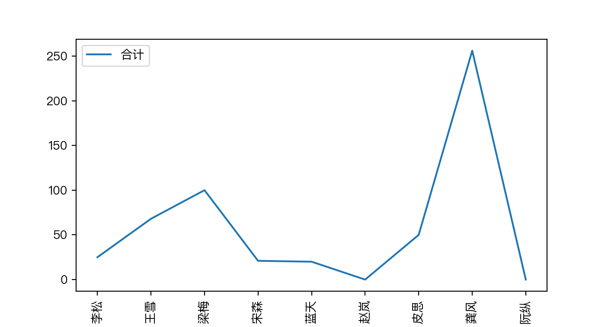 |
import pandas as pd
import numpy as np
import matplotlib.pyplot as plt
import matplotlib as mpl
mpl.rcParams['font.sans-serif'] = ['PingFang HK']
mpl.rcParams['font.serif'] = ['PingFang HK']
plt.rcParams['axes.unicode_minus'] = False
data = {'序号': list(range(6)),
'姓名': ['张三', '李四', '王五', '赵六', '牛七', '马八'],
'年龄': [23, 25, 26, 25, 25, 27],
'生日': ['2001-12-01', '2001-12-05', '2001-10-01', '2001-1-5', '2002-2-15', '2001-08-01'],
'数学': [88, 85, 60, 56, 90, 100],
'语文': [78, 75, 80, 67, 92, 96]
}
df = pd.DataFrame(data)
df.plot.line(x='姓名', y=['数学', '语文'])
plt.xticks(rotation=30)
plt.yticks([60, 80, 90, 100], ['及格', '良好',
'优秀', '满分'])
plt.grid()
plt.show()
| 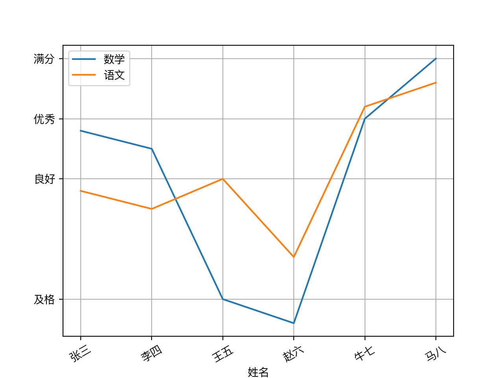 |
设置上边和右边无边框
ax = plt.gca()
ax.spines['right'].set_color('none')
ax.spines['top'].set_color('none')
#! /usr/bin/env python
# coding=utf-8
import matplotlib.pyplot as plt
import numpy as np
import math
import matplotlib as mpl
mpl.rcParams['font.sans-serif'] = ['PingFang HK']
mpl.rcParams['font.serif'] = ['PingFang HK']
plt.rcParams['axes.unicode_minus'] = False
x = np.arange(0, math.pi*2, 0.05)
fig = plt.figure()
ax = fig.add_axes([0.1, 0.1, 0.8, 0.8]) # main axes
y = np.sin(x)
ax.plot(x, y)
ax.set_title('正弦')
ax.set_yticks([-1, 0, 1])
ax = plt.gca()
# 设置上边和右边无边框
ax.spines['right'].set_color('none')
ax.spines['top'].set_color('none')
# 设置x坐标的位置
ax.xaxis.set_ticks_position('bottom')
ax.spines['bottom'].set_position(('data', 0))
ax.yaxis.set_ticks_position('left')
ax.spines['left'].set_position(('data', 0))
plt.show()
| 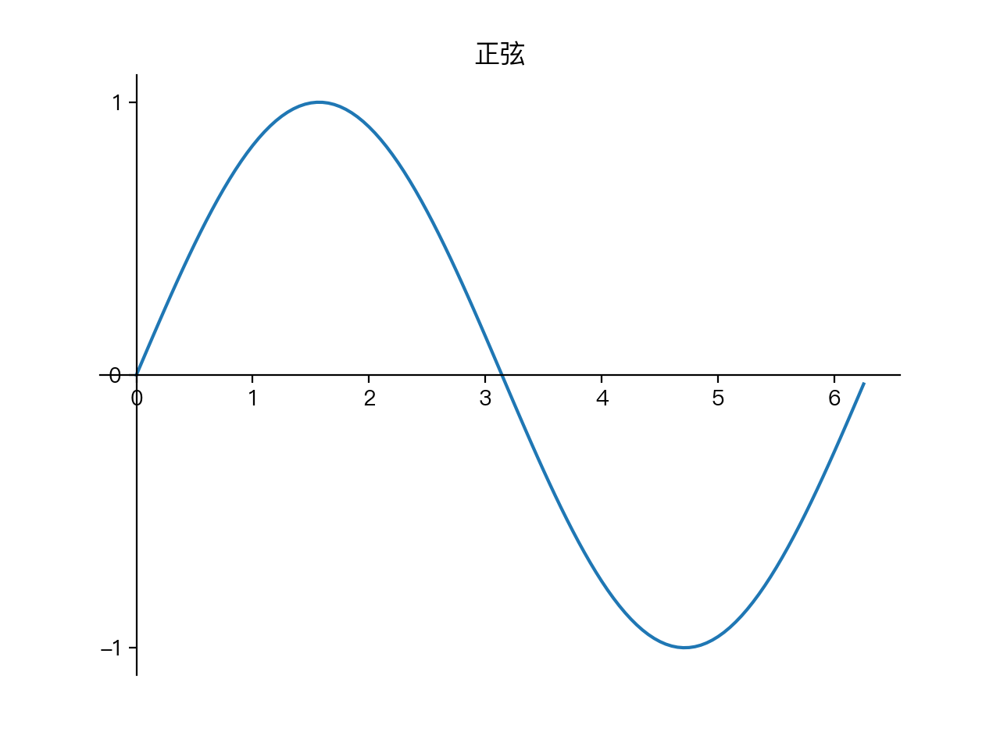 |
df.plot 参数
df.plot(x, y, kind, figsize, title, grid, legend, style)
x x 横坐标变量
y Y 纵坐标变量
kind 可视化图的种类，如line,hist, bar, barh, pie, kde, scatter
figsize 画布尺寸
title 标题
grid 是否显示格子线条
legend 是否显示图例
style 图的风格
import matplotlib as mpl
import matplotlib.pyplot as plt
import numpy as np
import pandas as pd
mpl.rcParams['font.sans-serif'] = ['PingFang HK']
mpl.rcParams['font.serif'] = ['PingFang HK']
plt.rcParams['axes.unicode_minus'] = False
data = {'序号': list(range(6)),
'姓名': ['张三', '李四', '王五', '赵六', '牛七', '马八'],
'语文': [78, 75, 80, 67, 92, 96],
'数学': [88, 85, 60, 56, 90, 100],
'英语': [75, 50, 69, 98, 82, 79],
'历史': [72, 87, 65, 99, 72, 89]
}
df = pd.DataFrame(data)
print(df)
df.plot.line(x='姓名', y=['语文', '数学', '英语', '历史'], # 4个变量可视化
legend=True, # 显示图例
subplots=True, # 多子图并存
layout=(2, 2), # 图形排列2行2列
figsize=(20, 10), # 图形尺寸
title='成绩单' # 标题
)
plt.show()
| 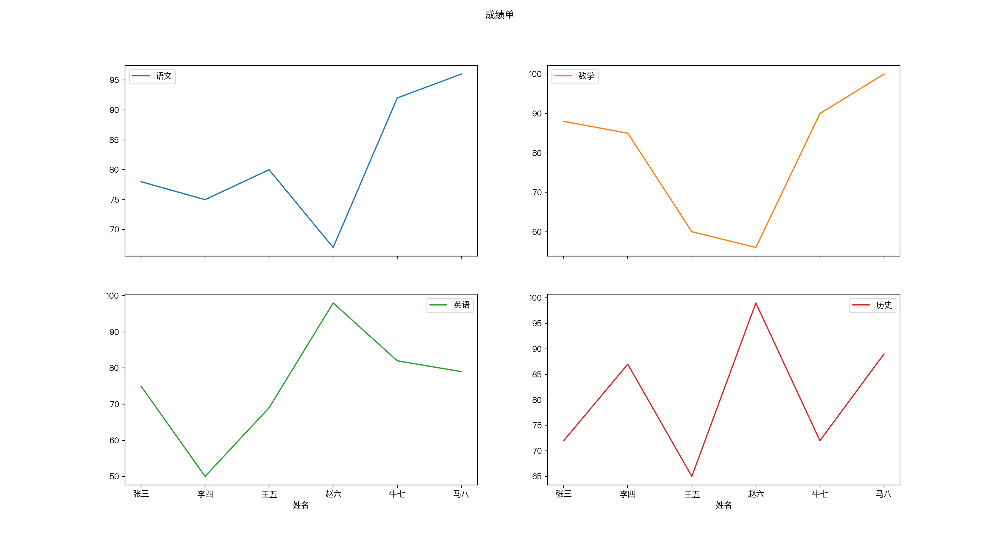 |
legend=False
import matplotlib as mpl
import matplotlib.pyplot as plt
import numpy as np
import pandas as pd
mpl.rcParams['font.sans-serif'] = ['PingFang HK']
mpl.rcParams['font.serif'] = ['PingFang HK']
plt.rcParams['axes.unicode_minus'] = False
data = {'序号': list(range(6)),
'姓名': ['张三', '李四', '王五', '赵六', '牛七', '马八'],
'年龄': [23, 25, 26, 25, 25, 27],
'生日': ['2001-12-01', '2001-12-05', '2001-10-01', '2001-1-5', '2001-2-15', '2001-08-01'],
'数学': [88, 85, 60, 56, 90, 100],
'语文': [78, 75, 80, 67, 92, 96]
}
df = pd.DataFrame(data)
df.生日 = pd.to_datetime(df.生日)
df.plot.line(x='姓名', y='生日', legend=False)
plt.grid()
plt.show()
import matplotlib.pyplot as plt print(plt.style.available)
输出风格
['Solarize_Light2', '_classic_test_patch', 'bmh', 'classic', 'dark_background', 'fast', 'fivethirtyeight', 'ggplot', 'grayscale', 'seaborn', 'seaborn-bright', 'seaborn-colorblind', 'seaborn-dark', 'seaborn-dark-palette', 'seaborn-darkgrid', 'seaborn-deep', 'seaborn-muted', 'seaborn-notebook', 'seaborn-paper', 'seaborn-pastel', 'seaborn-poster', 'seaborn-talk', 'seaborn-ticks', 'seaborn-white', 'seaborn-whitegrid', 'tableau-colorblind10']
应用一个风格
plt.style.use('ggplot')
风格参考
| 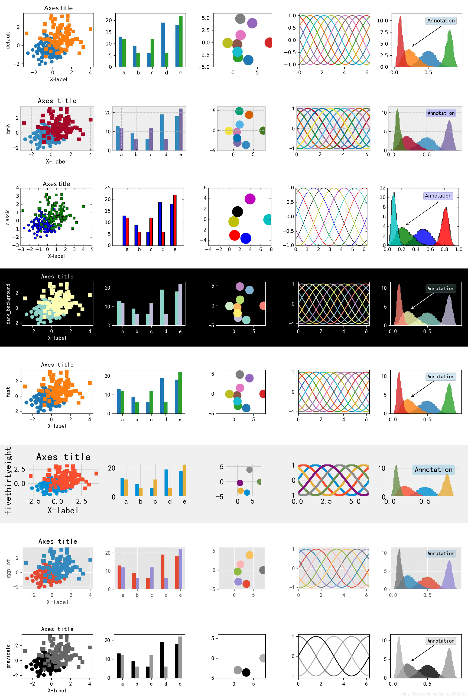 |